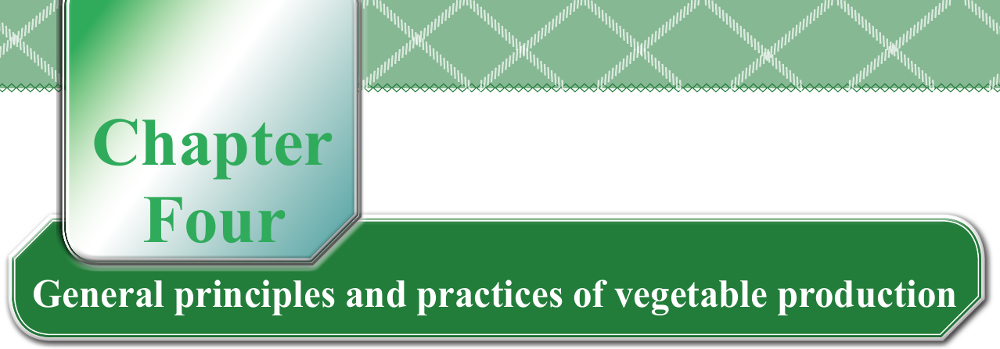

Chapter Four
General principles and practices of vegetable production
Planning for vegetable crop production
When growing vegetables, it is important to remember some few things. Most vegetables are usually perishable, and bulky, and some only grow in certain seasons. They also need resources to grow and can be affected by pests and diseases. It is sometimes not easy to know how much to produce because the market can change. Therefore, to make a plan for growing vegetables, we need to think about:
(a)
What is to be achieved in vegetable production?
(b)
What resources are needed for vegetable production?
(c)
Which types of vegetables can be produced with the available resources?
(d)
How does one look after the vegetables to make sure they grow well?
(e)
If one is growing more than one type of vegetable or if growing vegetables and also keeping animals, it is important to consider about how they can all be kept or grown together.
Our goals for vegetable production
Setting goals for vegetable production is a vital step for successful production. Is it to earn money, for food or for other reasons? Think also about how much time and money you can invest in vegetable production. Ensure that your goals are clear, specific, and achievable.